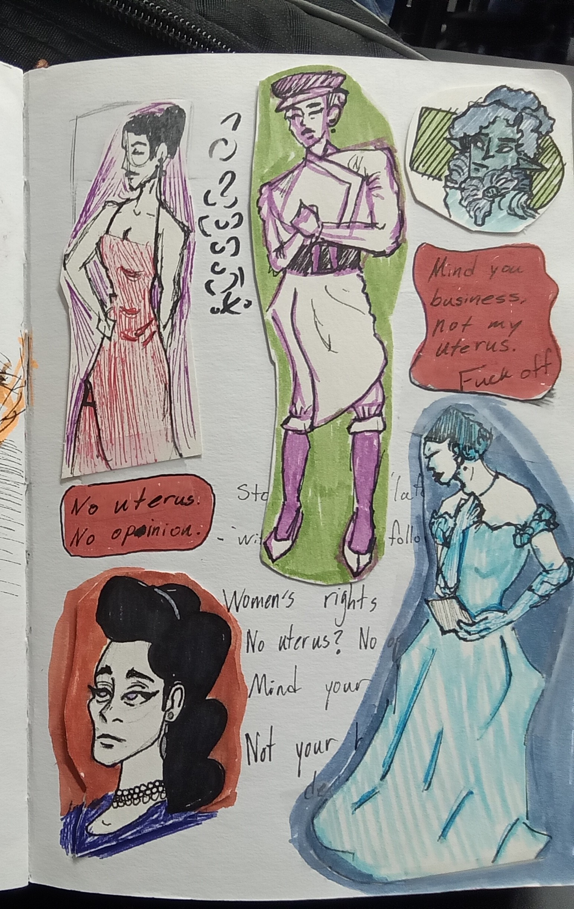

<html>
     <head>
          <link rel="stylesheet" href="style.css">
     </head>
</html>
<html>
  <html lang= "en">
<title> How I Fell Back in Love with My Art</title>
    <body>
<header>
  <div class="container">
  <h1>Thea Johnson</h1>
    <br>
    <br>
  <ul>
   <li>
				<a href="https://lightroomkillertips.com/wp-content/uploads/2017/07/comebacklater.jpg" target="About Artist" aria-label="More About Artist">
          <button id=button>
          Artist</a></li>
   <li><a href="https://lightroomkillertips.com/wp-content/uploads/2017/07/comebacklater.jpg" target="Shop" aria-label="Artwork for Sell"><button id=button2>Shop</a></li>
  <li><a href="https://lightroomkillertips.com/wp-content/uploads/2017/07/comebacklater.jpg" target="FAQ"aria-label="Frequently Asked Questions"><button id=button3>FAQ</a></li>
   </ul></button>
 </ul>
   </header>
        <!--MainImage-->
 <banner> 
<div align= "center">
<br>
    
    <!--Beginning the Process, Add timer, inpiration, & link to warm ups-->
 <!--EndMainImage-->
  </div>
  </banner>
      <main>
        
     <!--Below the Image/Wecome Sign-->
<section> 
      <br>
  <br>
  <br>
  <div class="BelowImg">
    <h2> How I Fell in Love with My Art Again</h2>
      </div>
  </section>
      <!--Begin, talk about the journey-->
        <section>
<div class="explain">
      <div class="Desc">
   <p> For the longest time, I would see people with beautiful and colorful sketchbooks with these beautiful art and sketches. I would be slightly envious of their art journey because I would look at my own sketchbook with the misalenious plain pages even though I had a lot of ideas for my own. The image to the right has several examples for what I wanted for my own sketchbook.<br><br> I picked up a sketchbook that someone gifted me a few years back and was scared to draw in it, causing me to ruin the entire thing. Yet to get past that, I moved on with the empty sketchbook in hand and a sense of no direction.</p>
      </div>
      <div class="image">
        
      </div>
  </div>
  </section>
        <br>
  <br>
  <br
        <!--Begin, talk about the journey-->
        <section>
          <section class=Sec>
			
				<p> I started sketching and trying to get better at anatomy and expressions, but keeping it somewhat in my style yet no avail or big enjoyment whenever I would look back on my work. It wasn't until I started having an art class that required me to make art for the class which is where I saw an improvement begin. I started to experiment with color pencils and highlighters. I also began to also write things such as lists or notes, both personal and class related.<br><br> I would test how certain materials would interact with plain thin paper, realizing that I would need something thicker or change my ways. I did both. I started to put sticky notes, pieces of scrap paper, or whatever I drew on into my sketchbook. I also started treating my sketchbook as a visual diary/scrapbook where I would tape business cards, stickers, reciepts, old tickets, and such. I saw it as a way to keep a moment/memory preserved in some way.
			</section>
          <br>
          <br>
          <br>
    <section class=FigureCl>
			<p class=Figure>What made a pivitol point in the advancement of my art was taking Figure Drawing in Spring 2024 and would have to sketch for almost 4-5 hours every Friday as well as the weekly homework and projects. As crazy exhausting it was, the atmosphere made me feel comfortable and safe to explore with my media. This class not only forced me to confront my anatomy drawing education and practice, but it influenced the way I approach my sketchbook. <br><br> Once I learned to do gesture drawings, I started to draw people around me, whether on the bus or at a public event. It has become a habit that I enjoy whenever I want to just take a moment. My figure drawing teacher is one of the artist I look up to and will be forever grateful for her influence and help.</p>
			
			</section>
 <!--Finalize-->
          <br>
          <br>
          <br>
      <section class=thir>
			
				<p>I eventually completed my sketchbook on September 27th, 2024. I already started a new one where I continue my practice and applying them elsewhere. I want to keep drawing a part of my life and daily task as long as I can.<br><br> This is not my sketchbook, but it is the closest example of how a page in my sketchbook looks. All I can say to people is sketchbooks are meant to be messy, a place where you can experiemnt and practice your skills or any material.</p>
			</section>
    </main>
      <br>
	    <h2> More of my Sketchbook pages</h2>
          <br>
          <br>
        <section class="Artwork">
	<div class="slider-wrapper">
		<div class="slider">
			
			
			
			
			
			
		</div>
		<div class="slider-nav">
			<a href="#slide-1"></a>
			<a href="#slide-2"></a>
			<a href="#slide-3"></a>
			<a href="#slide-4"></a>
			<a href="#slide-5"></a>
			<a href="#slide-6"></a>
		</div>
	</div>
</section>
<footer>
  <div id="btmnav">
  <h3>Thea Johnson</h3>
 <ul>
   <ol>Contact</ol>
   <ol>News</ol>
   <ol>Made by Thea Johnson</ol>
 </ul>
</div>
  </footer>
  </body>
</html>
